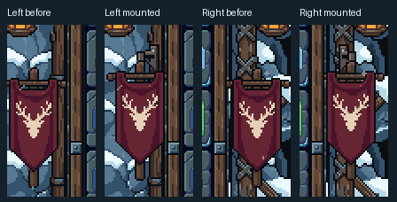

Snowy Mountain · Flags attached to the timbers
Both flags now hang from small bolted brackets attached to the actual side timbers. Their cloth, emblems and pole pixels are preserved. Mounts follow each viewport’s timber position. Everything outside the two flag areas is pixel-identical in the paired Unity captures.
Original source files preserved0 new PixelLab generationsNo merge
Before · detached flag placement After · bolted timber mounts
After · bolted timber mounts
The 360×640 view retains the existing shared HUD crowding and Unity editor pixel-camera warning. This stage does not redesign those shared controls. Tall safe-area capture simulates 24px side, 120px top and 96px bottom insets; it is not a phone test.
Mounting detail · actual Unity crops

Native mounted flags
Review checkpoint
This focused placement correction is ready for review. No further stage, production integration or merge has been performed.